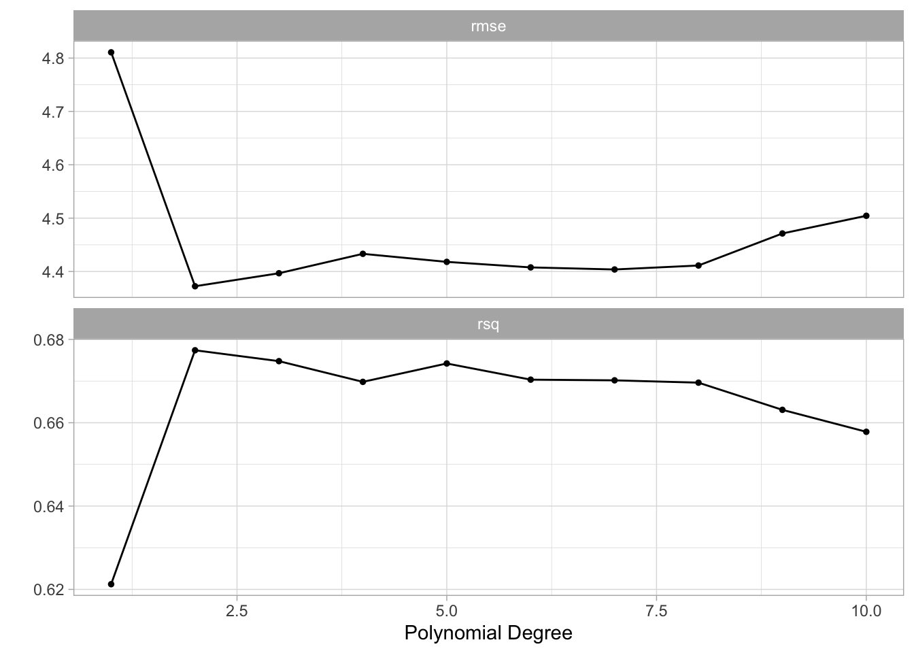

library(tidymodels)
library(ISLR)
Auto <- tibble(Auto)
Portfolio <- tibble(Portfolio)5 Resampling Methods
This lab will show us how to perform different resampling techniques. Some of these tasks are quite general and useful in many different areas. The bootstrap being such an example. This chapter introduces a lot of new packages. This chapter will bring rsample into view for creating resampled data frames as well as yardstick to calculate performance metrics. Finally, we will use tune to fit our models within resamples and dials to help with the selection of hyperparameter tuning values.
5.1 The Validation Set Approach
When fitting a model it is often desired to be able to calculate a performance metric to quantify how well the model fits the data. If a model is evaluated on the data it was fit on you are quite likely to get over-optimistic results. It is therefore we split our data into testing and training. This way we can fit the model to data and evaluate it on some other that that is similar.
Splitting of the data is done using random sampling, so it is advised to set a seed before splitting to assure we can reproduce the results. The initial_split() function takes a data.frame and returns a rsplit object. This object contains information about which observations belong to which data set, testing, and training. This is where you would normally set a proportion of data that is used for training and how much is used for evaluation. This is set using the prop argument which I set to 0.5 to closely match what happened in ISLR. I’m also setting the strata argument. This argument makes sure that both sides of the split have roughly the same distribution for each value of strata. If a numeric variable is passed to strata then it is binned and distributions are matched within bins.
set.seed(1)
Auto_split <- initial_split(Auto, strata = mpg, prop = 0.5)
Auto_split<Training/Testing/Total>
<194/198/392>The testing and training data sets can be materialized using the testing() and training() functions respectively.
Auto_train <- training(Auto_split)
Auto_test <- testing(Auto_split)And by looking at Auto_train and Auto_test we see that the lengths match what we expect.
Auto_train# A tibble: 194 × 9
mpg cylinders displacement horsepower weight acceleration year origin
<dbl> <dbl> <dbl> <dbl> <dbl> <dbl> <dbl> <dbl>
1 15 8 350 165 3693 11.5 70 1
2 16 8 304 150 3433 12 70 1
3 14 8 440 215 4312 8.5 70 1
4 14 8 455 225 4425 10 70 1
5 10 8 307 200 4376 15 70 1
6 17 6 250 100 3329 15.5 71 1
7 14 8 400 175 4464 11.5 71 1
8 14 8 351 153 4154 13.5 71 1
9 14 8 318 150 4096 13 71 1
10 13 8 400 170 4746 12 71 1
# ℹ 184 more rows
# ℹ 1 more variable: name <fct>Auto_test# A tibble: 198 × 9
mpg cylinders displacement horsepower weight acceleration year origin
<dbl> <dbl> <dbl> <dbl> <dbl> <dbl> <dbl> <dbl>
1 18 8 318 150 3436 11 70 1
2 17 8 302 140 3449 10.5 70 1
3 15 8 429 198 4341 10 70 1
4 14 8 454 220 4354 9 70 1
5 15 8 390 190 3850 8.5 70 1
6 15 8 383 170 3563 10 70 1
7 14 8 340 160 3609 8 70 1
8 15 8 400 150 3761 9.5 70 1
9 14 8 455 225 3086 10 70 1
10 22 6 198 95 2833 15.5 70 1
# ℹ 188 more rows
# ℹ 1 more variable: name <fct>Now that we have a train-test split let us fit some models and evaluate their performance. Before we move on it is important to reiterate that you should only use the testing data set once! Once you have looked at the performance on the testing data set you should not modify your models. If you do you might overfit the model due to data leakage.
Our modeling goal is to predict mpg by horsepower using a simple linear regression model, and a polynomial regression model. First, we set up a linear regression specification.
lm_spec <- linear_reg() %>%
set_mode("regression") %>%
set_engine("lm")And we fit it like normal. Note that we are fitting it using Auto_train.
lm_fit <- lm_spec %>%
fit(mpg ~ horsepower, data = Auto_train)We can now use the augment() function to extract the prediction and rmse() to calculate the root mean squared error. This will be the testing RMSE since we are evaluating on Auto_test.
augment(lm_fit, new_data = Auto_test) %>%
rmse(truth = mpg, estimate = .pred)# A tibble: 1 × 3
.metric .estimator .estimate
<chr> <chr> <dbl>
1 rmse standard 5.06and we get a RMSE of 5.0583165. This particular value is going to vary depending on what seed number you picked since the random sampling used in splitting the data set will be slightly different.
Using this framework makes it easy for us to calculate the training RMSE
augment(lm_fit, new_data = Auto_train) %>%
rmse(truth = mpg, estimate = .pred)# A tibble: 1 × 3
.metric .estimator .estimate
<chr> <chr> <dbl>
1 rmse standard 4.74Comparing these two values can give us a look into how generalizable the model is to data it hasn’t seen before. We do expect that the training RMSE to be lower than the testing RMSE but if you see a large difference there is an indication of overfitting or a shift between the training data set and testing data set. We don’t expect a shift here since the data sets were created with random sampling.
Next we will fit a polynomial regression model. We can use the linear model specification lm_spec to add a preprocessing unit with recipe() and step_poly() to create the polynomial expansion of horsepower. we can combine these two with workflow() to create a workflow object.
poly_rec <- recipe(mpg ~ horsepower, data = Auto_train) %>%
step_poly(horsepower, degree = 2)
poly_wf <- workflow() %>%
add_recipe(poly_rec) %>%
add_model(lm_spec)
poly_wf══ Workflow ════════════════════════════════════════════════════════════════════
Preprocessor: Recipe
Model: linear_reg()
── Preprocessor ────────────────────────────────────────────────────────────────
1 Recipe Step
• step_poly()
── Model ───────────────────────────────────────────────────────────────────────
Linear Regression Model Specification (regression)
Computational engine: lm We can now fit this model. Again remember to fit it on the training data set Auto_train.
poly_fit <- fit(poly_wf, data = Auto_train)The testing RMSE is then calculated as
augment(poly_fit, new_data = Auto_test) %>%
rmse(truth = mpg, estimate = .pred)# A tibble: 1 × 3
.metric .estimator .estimate
<chr> <chr> <dbl>
1 rmse standard 4.37Which is a little bit lower. So it would appear just from this, that the polynomial regression model has a better fit. Note that we are making decisions using the testing performance metrics, not the training performance metrics.
Lastly, we show below how changing the seed results in a slightly different estimate.
set.seed(2)
Auto_split <- initial_split(Auto)
Auto_train <- training(Auto_split)
Auto_test <- testing(Auto_split)
poly_fit <- fit(poly_wf, data = Auto_train)
augment(poly_fit, new_data = Auto_test) %>%
rmse(truth = mpg, estimate = .pred)# A tibble: 1 × 3
.metric .estimator .estimate
<chr> <chr> <dbl>
1 rmse standard 4.355.2 Leave-One-Out Cross-Validation
Leave-One-Out Cross-Validation is not integrated into the broader tidymodels framework. For more information read here.
5.3 k-Fold Cross-Validation
Earlier we set degree = 2 to create a second-degree polynomial regression model. But suppose we want to find the best value of degree that yields the “closest” fit. This is known as hyperparameter tuning and it is a case where we can use k-Fold Cross-Validation. To use k-Fold Cross-Validation we will be using the tune package, and we need 3 things to get it working:
- A parsnip/workflow object with one or more arguments marked for tuning,
- A
vfold_cvrsample object of the cross-validation resamples, - A tibble denoting the values of hyperparameter values to be explored.
we are doing the hyperparameter tuning on just one parameter, namely the degree argument in step_poly(). Creating a new recipe with degree = tune() indicated that we intend for degree to be tuned.
poly_tuned_rec <- recipe(mpg ~ horsepower, data = Auto_train) %>%
step_poly(horsepower, degree = tune())
poly_tuned_wf <- workflow() %>%
add_recipe(poly_tuned_rec) %>%
add_model(lm_spec)This means that would not be able to fit this workflow right now as the value of degree is unspecified, and if we try we get an error:
fit(poly_tuned_wf, data = Auto_train)Error in `recipes::prep()`:
! You cannot `prep()` a tuneable recipe. Argument(s) with `tune()`: 'degree'. Do you want to use a tuning function such as `tune_grid()`?The next thing we need to create is the k-Fold data set. This can be done using the vfold_cv() function. Note that the function uses v instead of k which is the terminology of ISLR. we set v = 10 as a common choice for k.
Auto_folds <- vfold_cv(Auto_train, v = 10)
Auto_folds# 10-fold cross-validation
# A tibble: 10 × 2
splits id
<list> <chr>
1 <split [264/30]> Fold01
2 <split [264/30]> Fold02
3 <split [264/30]> Fold03
4 <split [264/30]> Fold04
5 <split [265/29]> Fold05
6 <split [265/29]> Fold06
7 <split [265/29]> Fold07
8 <split [265/29]> Fold08
9 <split [265/29]> Fold09
10 <split [265/29]> Fold10The result is a tibble of vfold_splits which is quite similar to the rsplit object we saw earlier.
The last thing we need is a tibble of possible values we want to explore. Each of the tunable parameters in tidymodels has an associated function in the dials package. We need to use the degree() function here, and we extend the range to have a max of 10. This dials function is then passed to grid_regular() to create a regular grid of values.
degree_grid <- grid_regular(degree(range = c(1, 10)), levels = 10)Using grid_regular() is a little overkill for this application since the following code would provide the same result. But once you have multiple parameters you want to tune it makes sure that everything is in check and properly named.
degree_grid <- tibble(degree = seq(1, 10))Now that all the necessary objects have been created we can pass them to tune_grid() which will fit the models within each fold for each value specified in degree_grid.
tune_res <- tune_grid(
object = poly_tuned_wf,
resamples = Auto_folds,
grid = degree_grid
)It can be helpful to add control = control_grid(verbose = TRUE), this will print out the progress. Especially helpful when the models take a while to fit. tune_res by itself isn’t easily readable. Luckily tune provides a handful of helper functions.
autoplot() gives a visual overview of the performance of different hyperparameter pairs.
autoplot(tune_res)
It appears that the biggest jump in performance comes from going to degree = 2. Afterward, there might be a little bit of improvement but it isn’t as obvious.
The number used for plotting can be extracted directly with collect_metrics(). We also get an estimate of the standard error of the performance metric. We get this since we have 10 different estimates, one for each fold.
collect_metrics(tune_res)# A tibble: 20 × 7
degree .metric .estimator mean n std_err .config
<int> <chr> <chr> <dbl> <int> <dbl> <chr>
1 1 rmse standard 4.81 10 0.172 Preprocessor01_Model1
2 1 rsq standard 0.621 10 0.0316 Preprocessor01_Model1
3 2 rmse standard 4.37 10 0.209 Preprocessor02_Model1
4 2 rsq standard 0.677 10 0.0436 Preprocessor02_Model1
5 3 rmse standard 4.40 10 0.217 Preprocessor03_Model1
6 3 rsq standard 0.675 10 0.0446 Preprocessor03_Model1
7 4 rmse standard 4.43 10 0.218 Preprocessor04_Model1
8 4 rsq standard 0.670 10 0.0453 Preprocessor04_Model1
9 5 rmse standard 4.42 10 0.203 Preprocessor05_Model1
10 5 rsq standard 0.674 10 0.0436 Preprocessor05_Model1
11 6 rmse standard 4.41 10 0.189 Preprocessor06_Model1
12 6 rsq standard 0.670 10 0.0423 Preprocessor06_Model1
13 7 rmse standard 4.40 10 0.176 Preprocessor07_Model1
14 7 rsq standard 0.670 10 0.0420 Preprocessor07_Model1
15 8 rmse standard 4.41 10 0.175 Preprocessor08_Model1
16 8 rsq standard 0.670 10 0.0420 Preprocessor08_Model1
17 9 rmse standard 4.47 10 0.207 Preprocessor09_Model1
18 9 rsq standard 0.663 10 0.0445 Preprocessor09_Model1
19 10 rmse standard 4.50 10 0.227 Preprocessor10_Model1
20 10 rsq standard 0.658 10 0.0465 Preprocessor10_Model1You can also use show_best() to only show the best performing models.
show_best(tune_res, metric = "rmse")# A tibble: 5 × 7
degree .metric .estimator mean n std_err .config
<int> <chr> <chr> <dbl> <int> <dbl> <chr>
1 2 rmse standard 4.37 10 0.209 Preprocessor02_Model1
2 3 rmse standard 4.40 10 0.217 Preprocessor03_Model1
3 7 rmse standard 4.40 10 0.176 Preprocessor07_Model1
4 6 rmse standard 4.41 10 0.189 Preprocessor06_Model1
5 8 rmse standard 4.41 10 0.175 Preprocessor08_Model1We did see that the performance plateaued after degree = 2. There are a couple of function to select models by more sophisticated rules. select_by_one_std_err() and select_by_pct_loss(). Here we use select_by_one_std_err() which selects the most simple model that is within one standard error of the numerically optimal results. We need to specify degree to tell select_by_one_std_err() which direction is more simple.
You want to
- use
desc(you_model_parameter)if larger values lead to a simpler model - use
you_model_parameterif smaller values lead to a simpler model
lower polynomials models are simpler so we ditch desc().
select_by_one_std_err(tune_res, degree, metric = "rmse")# A tibble: 1 × 9
degree .metric .estimator mean n std_err .config .best .bound
<int> <chr> <chr> <dbl> <int> <dbl> <chr> <dbl> <dbl>
1 2 rmse standard 4.37 10 0.209 Preprocessor02_Mod… 4.37 4.58This selected degree = 2. And we will use this value since we simpler models sometimes can be very beneficial. Especially if we want to explain what happens in it.
best_degree <- select_by_one_std_err(tune_res, degree, metric = "rmse")This selected value can be now be used to specify the previous unspecified degree argument in poly_wf using finalize_workflow().
final_wf <- finalize_workflow(poly_wf, best_degree)
final_wf══ Workflow ════════════════════════════════════════════════════════════════════
Preprocessor: Recipe
Model: linear_reg()
── Preprocessor ────────────────────────────────────────────────────────────────
1 Recipe Step
• step_poly()
── Model ───────────────────────────────────────────────────────────────────────
Linear Regression Model Specification (regression)
Computational engine: lm This workflow can now be fitted. And we want to make sure we fit it on the full training data set.
final_fit <- fit(final_wf, Auto_train)
final_fit══ Workflow [trained] ══════════════════════════════════════════════════════════
Preprocessor: Recipe
Model: linear_reg()
── Preprocessor ────────────────────────────────────────────────────────────────
1 Recipe Step
• step_poly()
── Model ───────────────────────────────────────────────────────────────────────
Call:
stats::lm(formula = ..y ~ ., data = data)
Coefficients:
(Intercept) horsepower_poly_1 horsepower_poly_2
23.34 -104.85 34.39 5.4 The Bootstrap
This section illustrates the use of the bootstrap in the simple Section 5.2 of ISLR, as well as on an example involving estimating the accuracy of the linear regression model on the Auto data set.
First, we want to look at the accuracy of a statistic of interest. This statistic is justified in ISLR. We want to calculate the metric within many different bootstraps. We start by calculating 1000 bootstraps of the Portfolio data set.
Portfolio_boots <- bootstraps(Portfolio, times = 1000)
Portfolio_boots# Bootstrap sampling
# A tibble: 1,000 × 2
splits id
<list> <chr>
1 <split [100/36]> Bootstrap0001
2 <split [100/39]> Bootstrap0002
3 <split [100/39]> Bootstrap0003
4 <split [100/33]> Bootstrap0004
5 <split [100/39]> Bootstrap0005
6 <split [100/34]> Bootstrap0006
7 <split [100/40]> Bootstrap0007
8 <split [100/38]> Bootstrap0008
9 <split [100/36]> Bootstrap0009
10 <split [100/41]> Bootstrap0010
# ℹ 990 more rowsThe result is a tibble of boot_split objects. The rsample has constructed these splits in such a way that these 1000 bootstraps take up way less than 1000 times the space as Portfolio.
Next, we create a function that takes a boot_split object and returns the calculated metric.
Now we can use mutate() and map_dbl() from dplyr and purrr respectively to apply alpha.fn to each of the bootstraps.
alpha_res <- Portfolio_boots %>%
mutate(alpha = map_dbl(splits, alpha.fn))
alpha_res# Bootstrap sampling
# A tibble: 1,000 × 3
splits id alpha
<list> <chr> <dbl>
1 <split [100/36]> Bootstrap0001 0.516
2 <split [100/39]> Bootstrap0002 0.687
3 <split [100/39]> Bootstrap0003 0.599
4 <split [100/33]> Bootstrap0004 0.556
5 <split [100/39]> Bootstrap0005 0.549
6 <split [100/34]> Bootstrap0006 0.619
7 <split [100/40]> Bootstrap0007 0.387
8 <split [100/38]> Bootstrap0008 0.675
9 <split [100/36]> Bootstrap0009 0.538
10 <split [100/41]> Bootstrap0010 0.407
# ℹ 990 more rowsand now we have all the bootstrap sample values. These can now further be analyzed.
In the next example do we want to study the variability of the slope and intercept estimate of the linear regression model. And it follows the same structure. First, we create some bootstraps of the data. Then we create a function that takes a split and returns some values. This function will return a tibble for each bootstrap.
Auto_boots <- bootstraps(Auto)
boot.fn <- function(split) {
lm_fit <- lm_spec %>% fit(mpg ~ horsepower, data = analysis(split))
tidy(lm_fit)
}then we use mutate() and map() to apply the function to each of the bootstraps.
boot_res <- Auto_boots %>%
mutate(models = map(splits, boot.fn))And we can now unnest() and use group_by() and summarise() to get an estimate of the variability of the slope and intercept in this linear regression model.